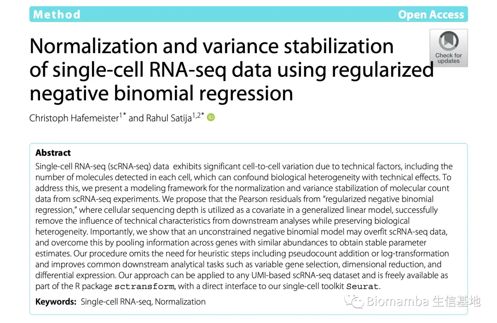
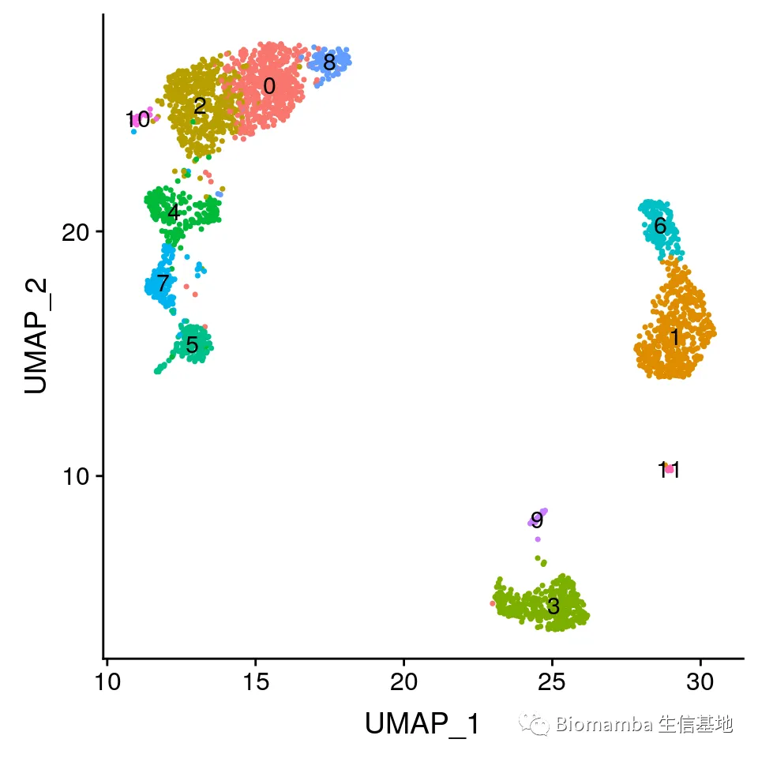
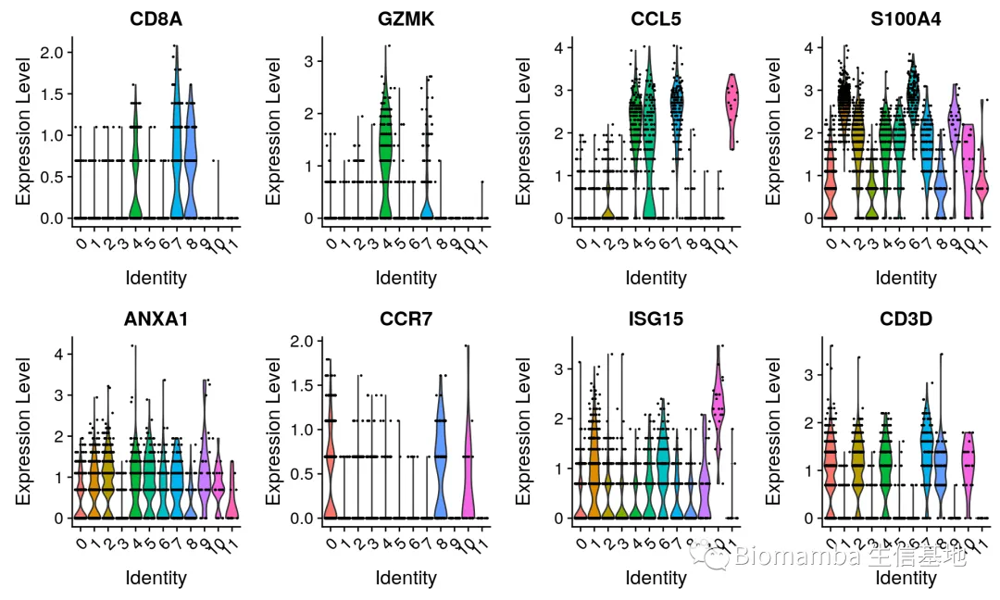
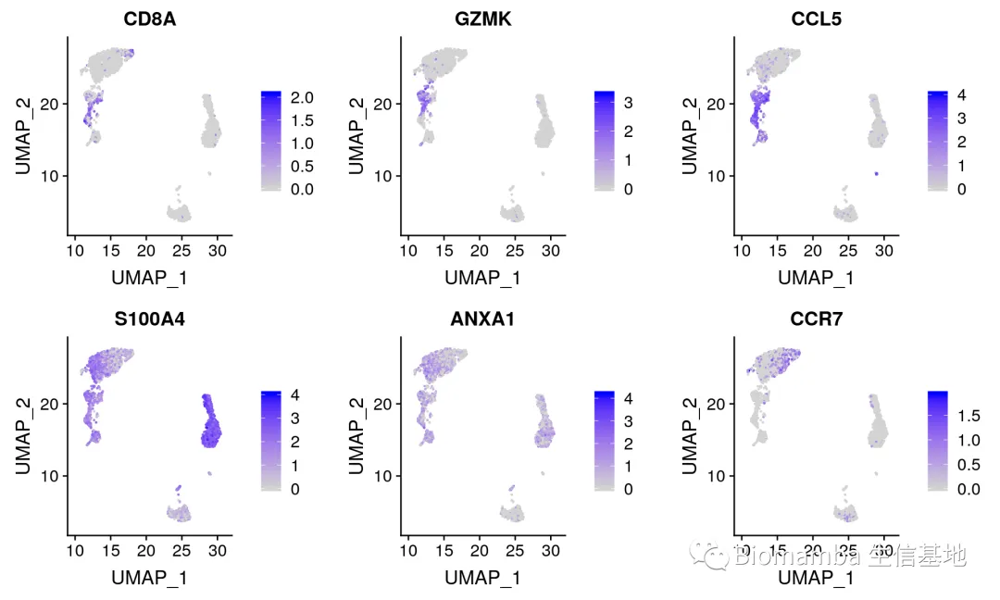
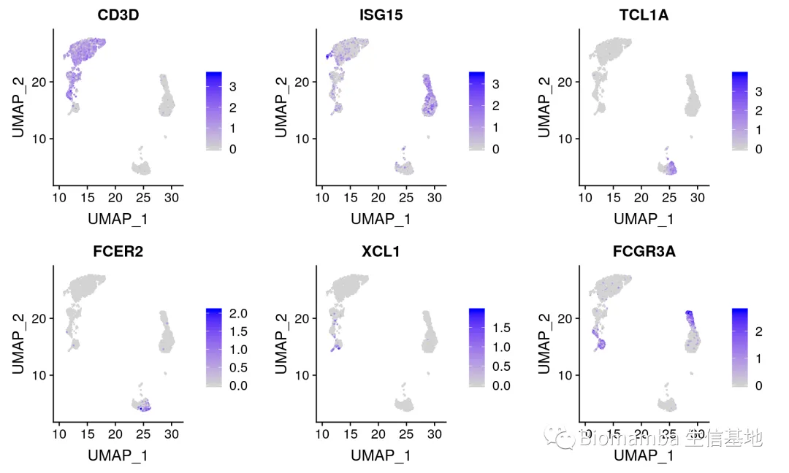
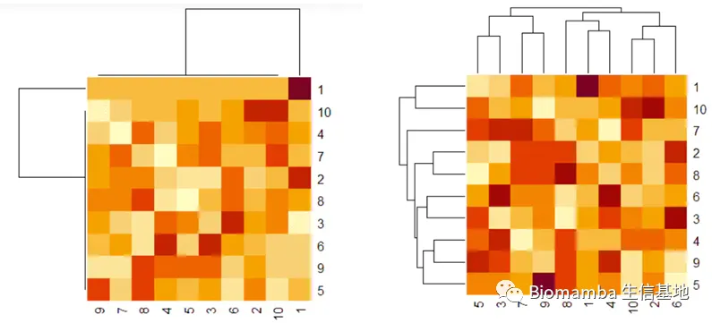

SCTransform与ScaleData
原文：https://mp.weixin.qq.com/s?__biz=MzAwMzIzOTk5OQ==&mid=2247489675&idx=1&sn=be27cd0a25fe4f2924582bd87a3d86d4&chksm=9b3f61dbac48e8cd19187daa9851cdc7fd435d72d99563613ec9674aa6a8b9d64f63125ba77e#rd 合集：单细胞教程全收录
 这是一篇我安排给技术支持的作业，总的来说两者都是用于处理表达矩阵的函数，但SCTransform()显得比ScaleData()更加高级一些，ScaleData()的功能只是SCTransform()的一部分。而且，针对符合正则化负二项式回归分布 的系数矩阵来说SCTransform()用于分群敏感度会更高；值得注意的是SCTransform()的矩阵不适合用于批次矫正。
这是一篇我安排给技术支持的作业，总的来说两者都是用于处理表达矩阵的函数，但SCTransform()显得比ScaleData()更加高级一些，ScaleData()的功能只是SCTransform()的一部分。而且，针对符合正则化负二项式回归分布 的系数矩阵来说SCTransform()用于分群敏感度会更高；值得注意的是SCTransform()的矩阵不适合用于批次矫正。
ScaleData()与SCTransform()有什么区别呢？首先，两者算法截然不同，SCTransform基于“正则化负二项式回归分布”算法，用于测序数据的归一化，常用来对单细胞测序数据的测序深度差异进行归一化，是Seurat3.0流程重要步骤。Seurat最新版本可以使用SCTransform函数对数据做标准化，它可代替三个函数**（NormalizeData, ScaleData, FindVariableFeatures）** 的运行，且对测序深度的校正效果好于log标准化，但不能用于批次校正使用。
而ScaleData()是Seurat2.0版本的标准流程，在PCA之前对数据进行正态化处理，因为PCA主成分分析认为主元之间彼此正交，样本呈高斯分布（正态分布）。SCT流程在官网是这样介绍的：sctransform使用“正则化负二项式回归分布”计算scRNA-seq数据中的技术噪声模型。此模型的残差是归一化值，可以是正数，也可以是负数。正值即阳性残差表明，对于该基因在群体中的平均表达和细胞测序深度，我们观察到的UMI比预期的要多，而负残差则表明相反。

我们来实际尝试一下吧：
首先安装 sctransform 和 Seurat v3。
install.packages("Seurat")
library(Seurat)
library(ggplot2)
library(sctransform)
加载数据并创建Seurat对象
pbmc_data <- Read10X(data.dir = "../data/pbmc3k/filtered_gene_bc_matrices/hg19/")
pbmc <- CreateSeuratObject(counts = pbmc_data)
通过 sctransform 计算
-
请注意，此单个命令将替换NormalizeData、ScaleData和FindVariableFeatures
-
转换后的数据将在SCT测定中可用，该测定在运行sctransform后设置为默认值
-
在归一化过程中，还可以消除变异的混杂源，例如线粒体百分比
# store mitochondrial percentage in object meta data
pbmc <- PercentageFeatureSet(pbmc, pattern = "^MT-", col.name = "percent.mt")
# run sctransform
pbmc <- SCTransform(pbmc, vars.to.regress = "percent.mt", verbose = FALSE)
通过 PCA 和 UMAP 嵌入执行降维
# These are now standard steps in the Seurat workflow for visualization and clustering
pbmc <- RunPCA(pbmc, verbose = FALSE)
pbmc <- RunUMAP(pbmc, dims = 1:30, verbose = FALSE)
pbmc <- FindNeighbors(pbmc, dims = 1:30, verbose = FALSE)
pbmc <- FindClusters(pbmc, verbose = FALSE)
DimPlot(pbmc, label = TRUE) + NoLegend()

与seurat工作流程相比，sctransform归一化揭示了更明显的生物学差异，在以下几个方面：
-
基于CD8A，GZMK，CCL5的表达，至少3个CD8 T细胞群（幼稚，记忆，效应）
-
的清晰分离
-
基于S100A4、CCR7、IL32 和ISG15 的三个CD4 T 细胞群(幼稚、记忆、IFN 激活)
-
的清晰分离
-
基于XCL1和 FCGR3A 将 NK 细胞分离成CD56dim与bright clusters
# These are now standard steps in the Seurat workflow for visualization and clustering Visualize
# canonical marker genes as violin plots.
VlnPlot(pbmc, features = c("CD8A", "GZMK", "CCL5", "S100A4", "ANXA1", "CCR7", "ISG15", "CD3D"),
pt.size = 0.2, ncol = 4)

# Visualize canonical marker genes on the sctransform embedding.
FeaturePlot(pbmc, features = c("CD8A", "GZMK", "CCL5", "S100A4", "ANXA1", "CCR7"), pt.size = 0.2,
ncol = 3)

FeaturePlot(pbmc, features = c("CD3D", "ISG15", "TCL1A", "FCER2", "XCL1", "FCGR3A"), pt.size = 0.2,
ncol = 3)

**ScaleData()**的应用
ScaleData() 对基因进行z-score处理，z-score 的计算方法如下：

一、 用于seurat标准化流程：
ScaleData()是Seurat2.0版本的标准流程，在PCA之前对数据进行正态化处理，因为PCA主成分分析认为主元之间彼此正交，样本呈高斯分布（正态分布）。在PCA前对数据进行正态化处理：
pbmc.counts <- Read10X(data.dir = "~/Downloads/pbmc3k/filtered_gene_bc_matrices/hg19/")
pbmc <- CreateSeuratObject(counts = pbmc.counts)
pbmc <- NormalizeData(object = pbmc)
pbmc <- FindVariableFeatures(object = pbmc)
pbmc <- ScaleData(object = pbmc)
pbmc <- RunPCA(object = pbmc)
pbmc <- FindNeighbors(object = pbmc)
pbmc <- FindClusters(object = pbmc)
pbmc <- RunTSNE(object = pbmc)
DimPlot(object = pbmc, reduction = "tsne")
二、 绘制热图：
实际上可以发现，这个z-score就是做了一个(0,1)正态分布化的操作，那这个操作有什么意义呢？在绘制热图的时候，经常用到，它可以平衡不同元素之间的偏差，如一个很偏倚的数据会掩盖其他数据的差异，经过ScaleData之后，数据就比较平衡，不会出现较大的偏倚。热图也就照顾到所有的元素。

可以看到，左图的右上角的那个元素太过偏倚，掩盖了一些其他元素的展示，但是当我们对数据进行ScaleData()正态标准化之后,右图就展示地较为平衡。

如何联系我们
 公众号后台中消息更新不及时，超过48h后便不允许回复读者消息，这里给大家留一下领取资料、咨询服务器的微信号 ，方便大家随时交流、提建议（由助理接待）。此外呼声一直很高的交流群也建好了，欢迎大家入群讨论：你们要的微信、交流群，来了！
大家可以阅读完这几篇之后添加笑一笑也就算了如何搜索公众号过往发布内容
公众号后台中消息更新不及时，超过48h后便不允许回复读者消息，这里给大家留一下领取资料、咨询服务器的微信号 ，方便大家随时交流、提建议（由助理接待）。此外呼声一直很高的交流群也建好了，欢迎大家入群讨论：你们要的微信、交流群，来了！
大家可以阅读完这几篇之后添加笑一笑也就算了如何搜索公众号过往发布内容